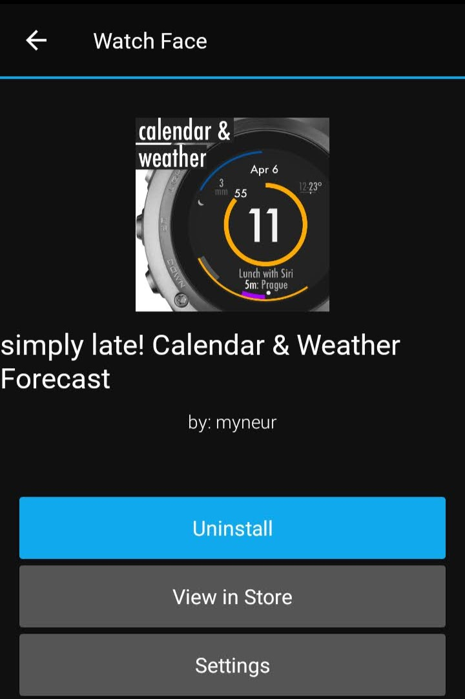
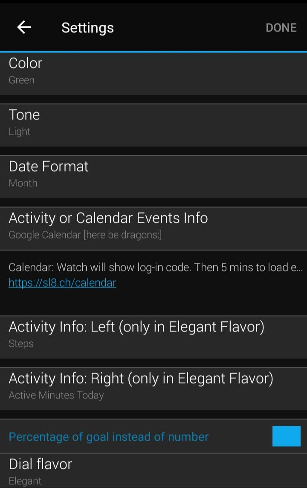
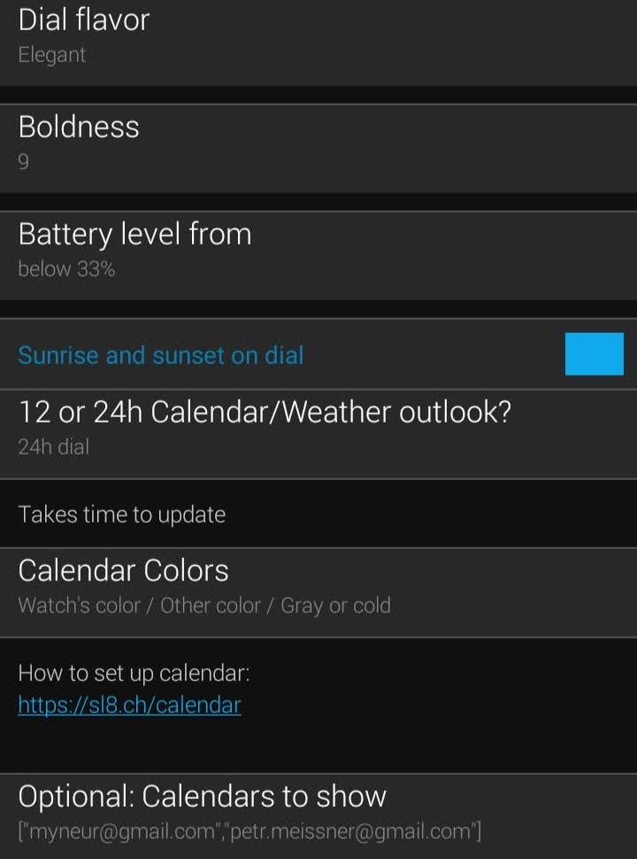
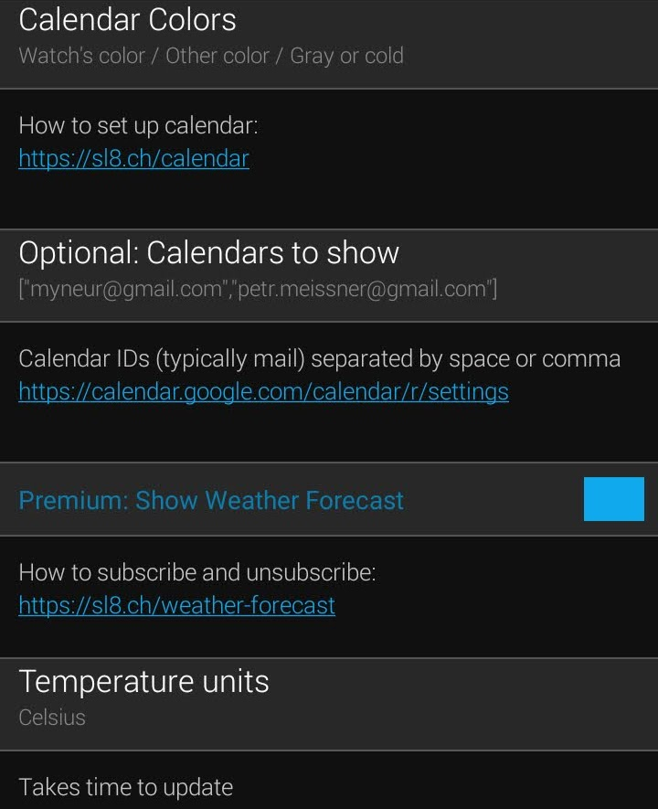
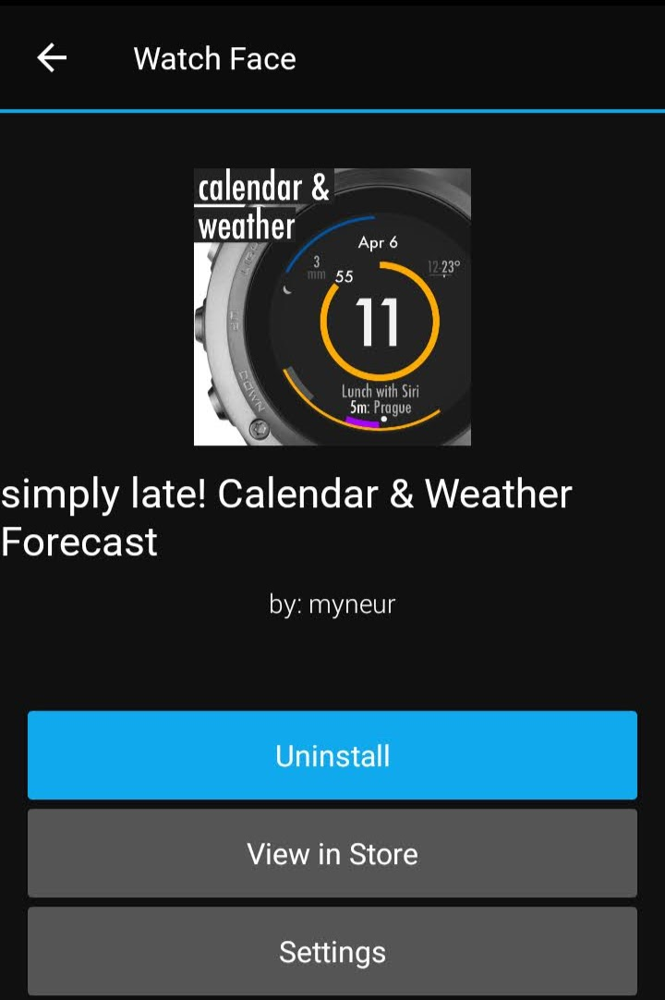
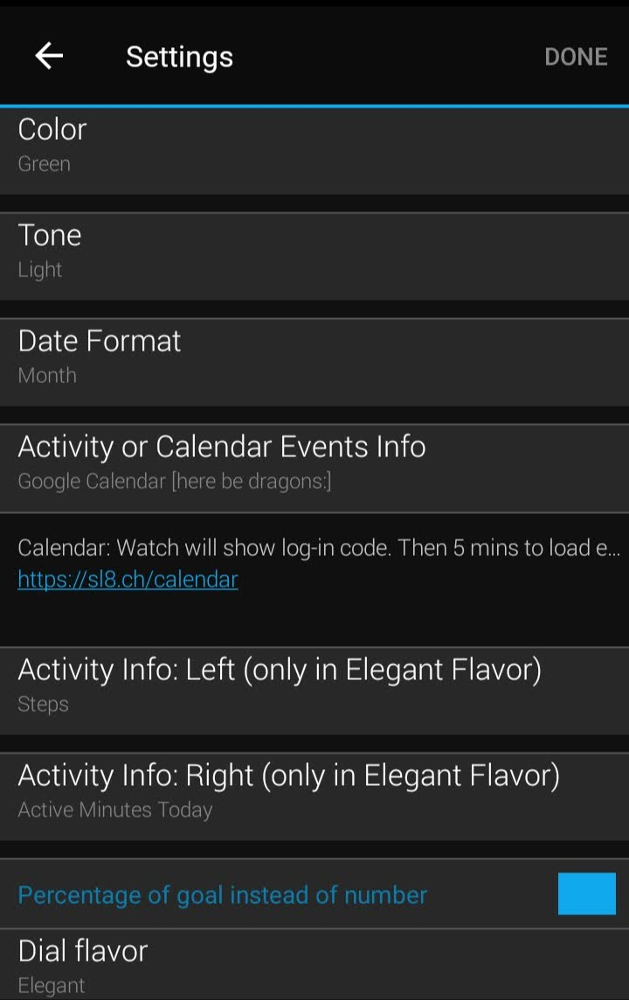
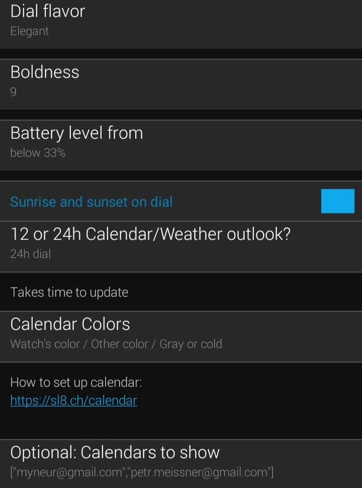
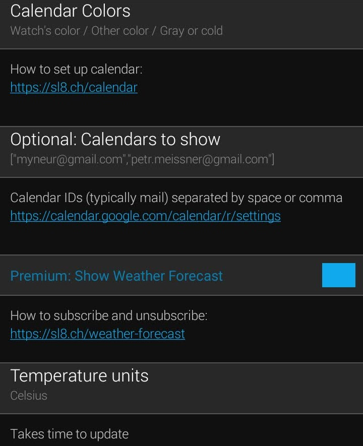

Weather forecast & Google Calendar Settings
Open Garmin mobile Connect app and browse:

 







Compatibility: only powerful watches like Garmin Forerunner 245+, fēnix 5+, Venu, vívoactive 3+ can show the calendar or weather forecast.
Google Calendar
5-60 min to update
The watch can access the internet only once in 5 mins. It takes 5 mins to load calendar events after you log-in.
Then events are updated hourly to save battery life or after any interaction like a notification or display of a widget, activity or menu. That way a manual refresh can be triggered as well.
The calendar updates first, followed by a weather forecast in 5 mins.
Battery consumption
In default settings, battery consumption is better than with original Garmin watch faces (according to our measurements).
If you experienced a battery drain: didn't you coincidentally turn any sensor on (like a wrist heart-rate monitor)?
Strong flavor limitations
Strong dial flavor has a limited support of calendar events. It displays the events, but it is not rendered beautifully.
It also won't fit multiple metrics at the same time.
Multiple calendars
When no calendar is set, the watch loads your primary calendar.
You can add more calendars by pasting calendar IDs from Google Calendar settings to watch settings: “Calendars to show”.
The list of calendars must be separated by a space or comma.
Calendar colors
First calendar has the same color as the watch. Second has a complementar color. The third is grayish. Then it repeats.
Reporting problems & Known bug
The calendar might fail to load on some devices due to a Garmin bug.
If you encounter it, please vote up here for Garmin to fix it soonish rather than laterish.
Weather forecast
How forecast updates
The temperature shown is the current temperature at your location, together with a maximum or minimum temperature forecast for next 16 h.
The current temperature can get outdated when there is no connection.
The weather forecast is being updated hourly. If you use calendar as well, it updates 5 mins after the calendar.
Forecast does not update?
The forecast might fail to load in next occasions:
- Connection: Occasionally, Garmin Bluetooth connection to your phone might drop without a notice. Check the watch is connected e. g. by changing a color of the watch in Garmin Mobile Connect app.
- Calendar: failing to load will prevent weather to load as well. If you have a calendar on, can you turn it off to check if it is not the culprit? Calendars also fail to load when you have not permissions to view the calendar you manually added to settings.
Please consider also voting up for a Garmin to fix of bug.
Inaccurate forecast? Check location!
If your last activity ended in a different location than you are now, acquire a GPS signal by any activity outdoors to update your forecast to your location.
Only newer watches like fēnix 6, Venu, vívoactive 3 or Forerunner 245 update their position from your phone.
To debug, check whether the Garmin’s weather widget forecast isn’t wrong as well.
You can choose an accurate weather forecast Yr.no or Clear Outside. Yr.no is the best in Europe. Try (more pessimistic) Clear Outside in other regions or if not satisfied.